About Us
「その建物に何が残り、何ができるのか。
落ち着いて、丁寧に見極めていきたい」
株式会社ツクリカエは、空き家再生・住宅リノベーション・民泊コンバージョン・商業施設改修を手がける建築リノベーション会社です。すべてを新しくするのではなく、活かせるものを残し、整えるべきところにだけ工夫を施す——そんな考え方を大切に、木造・鉄骨造・民泊施設など多様な建築用途で施工を重ねてきました。
行政書士や運営企業などの専門家ネットワークを活かした総合コーディネート力も強みのひとつ。現地調査から行政対応、企画・設計・デザイン、コーディネート、現場監修まで、ワンストップで伴走します。
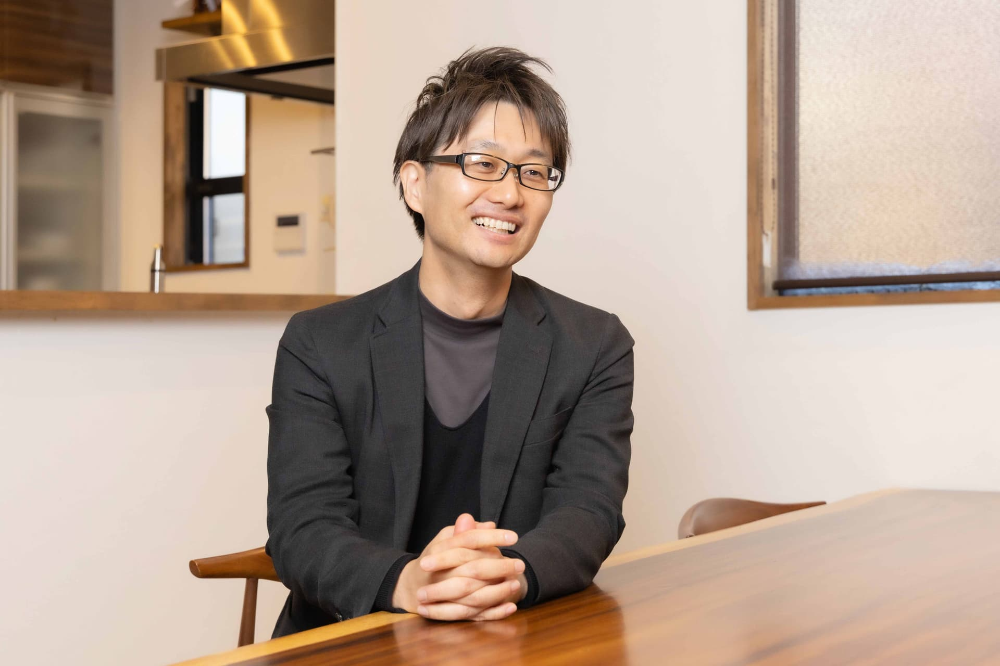
Our Services
建物の状態と地域の特性を見極め、最適な再生プランをご提案します
現地調査から、民泊・商業施設へのコンバージョン、行政対応支援まで。眠っている空き家を、地域の資産として生まれ変わらせます。
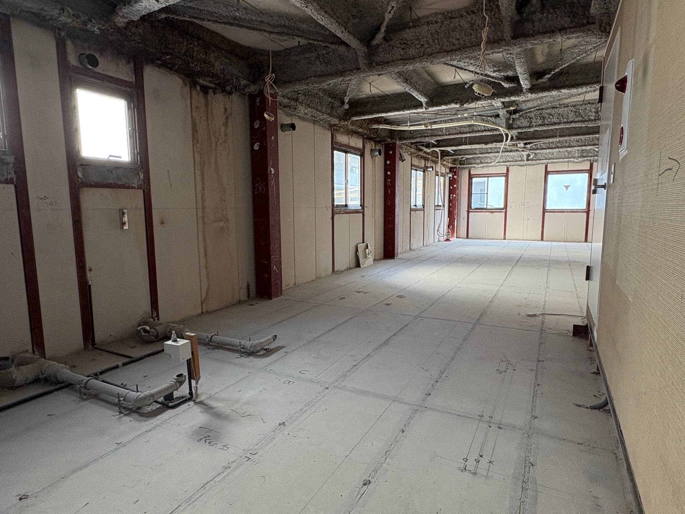
水まわりなどの部分改修から、間取りを変える大規模構造改修まで。ご家族の暮らし方に合わせて、住まいをつくりかえます。
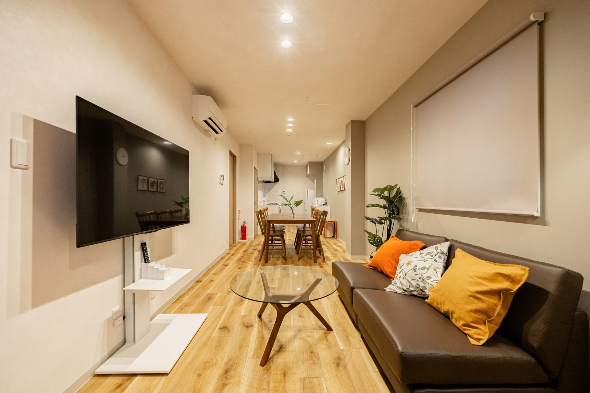
プランニングからコーディネート、現場監修まで一貫対応。用途・立地・予算を踏まえた、実現性の高い計画をご提案します。
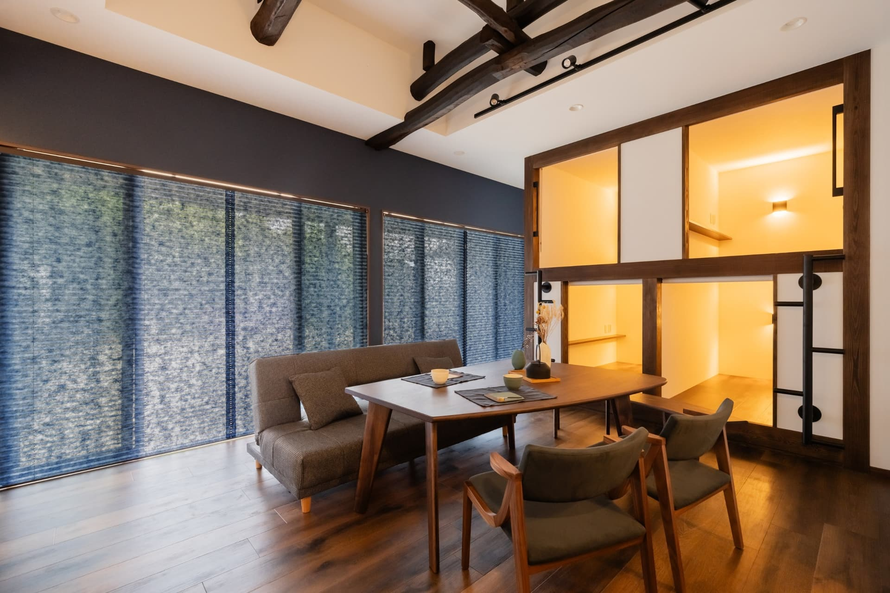
Our Works
木造・鉄骨造・民泊施設まで、これまでに手がけた再生の一部をご紹介します
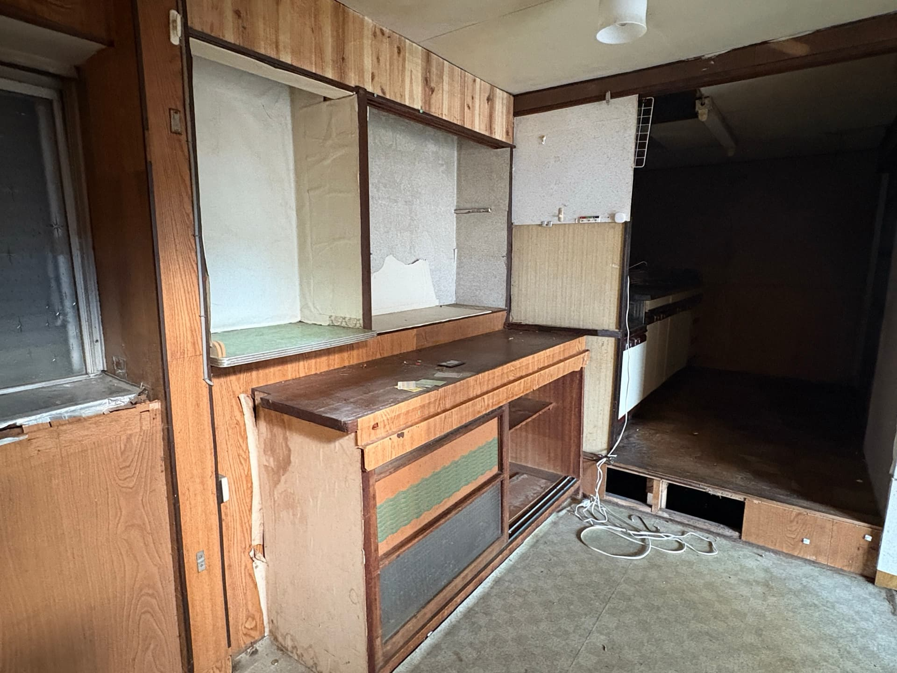
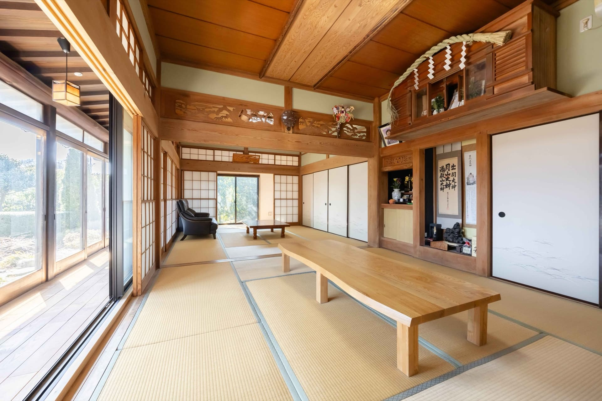
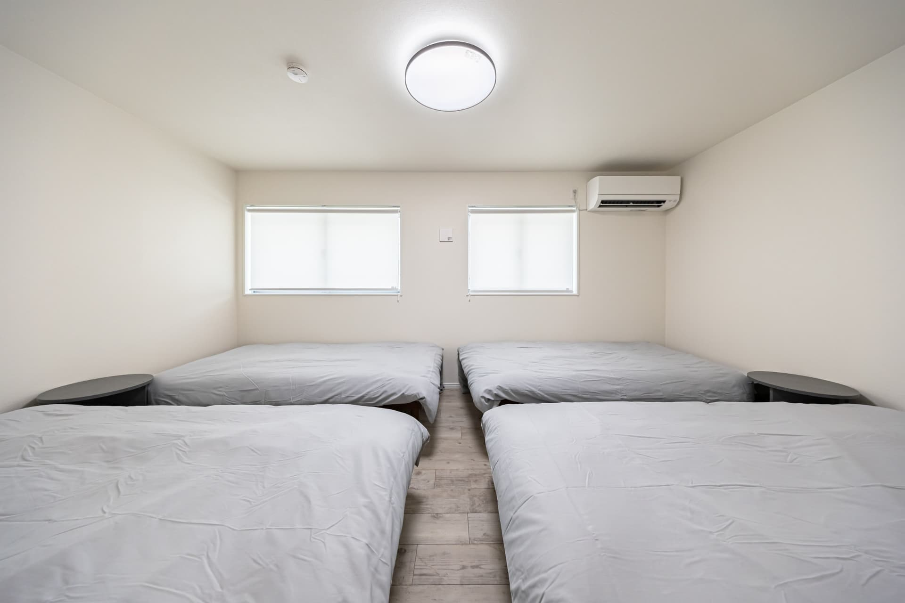
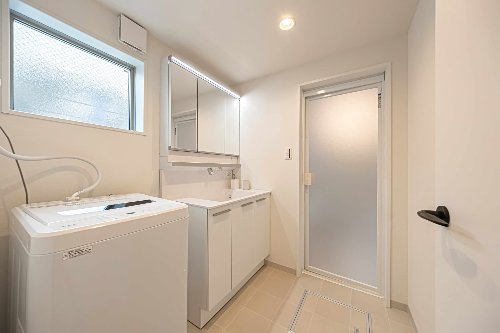
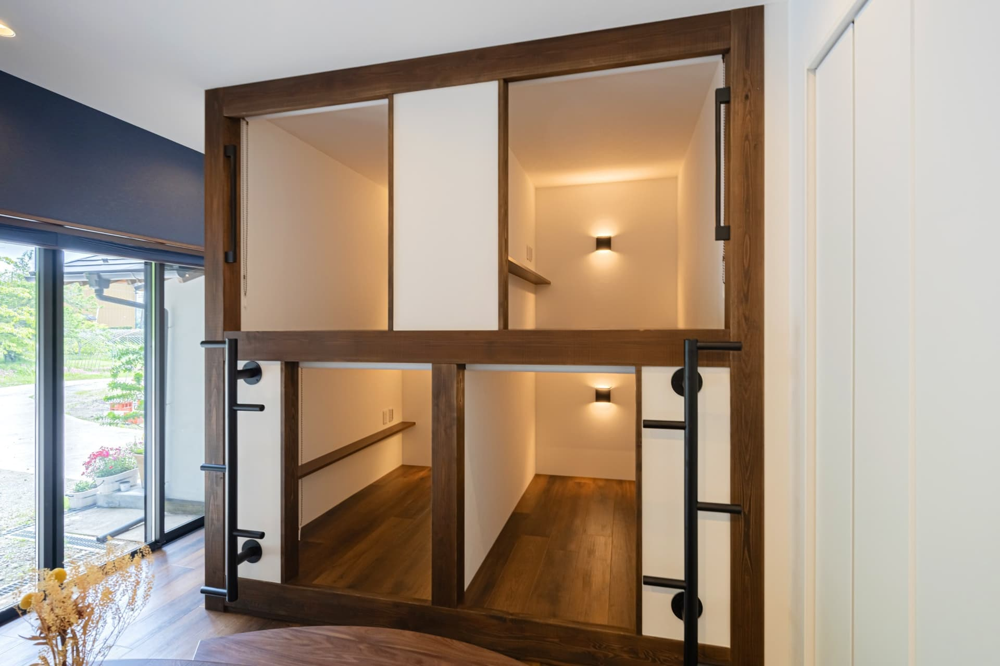
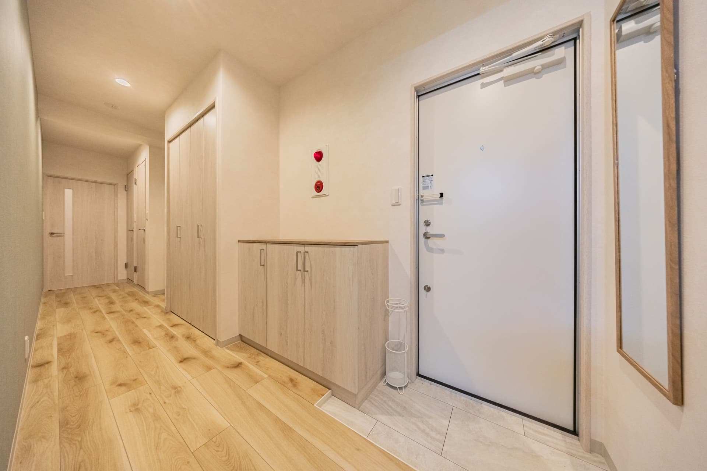
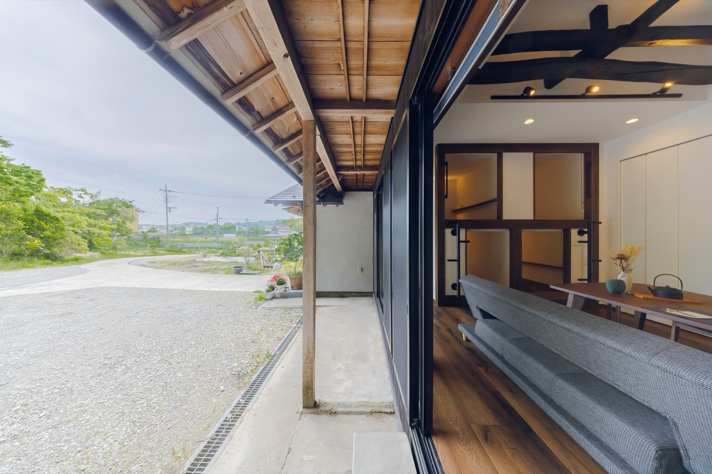
Service Area
上記エリア以外の空き家・住宅・商業施設のご相談もお気軽にお問い合わせください。
Our Strength
空き家の再生には、建築だけでなく、権利関係の整理や行政手続き、その後の運営体制づくりまで、多くの専門知識が必要です。ツクリカエは、行政書士や運営企業など専門家ネットワークと連携する総合コーディネート力で、お客様の負担をできる限り軽くしながら、計画から完成後の運用まで一貫してサポートします。
代表・齋藤伸幸は一級建築施工管理技士、ホームインスペクターとして、建物の現状を的確に見極める確かな知見を持っています。「すべてを新しくするのではなく、活かせるものを残し、整えるべきところにだけ工夫を施す」——その姿勢が、費用を抑えながらも建物本来の魅力を引き出す再生を可能にしています。
Contact
空き家の活用、住宅リノベーション、民泊・商業施設への転用など、
どんな小さなご相談もお待ちしております。
担当：齋藤（n-saito@tsukurikae.com）／ お問い合わせフォームは24時間受付しております。